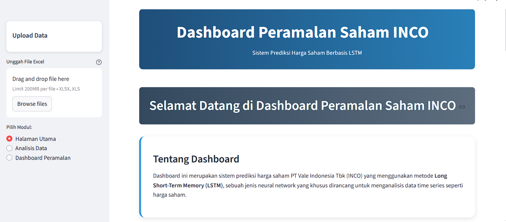
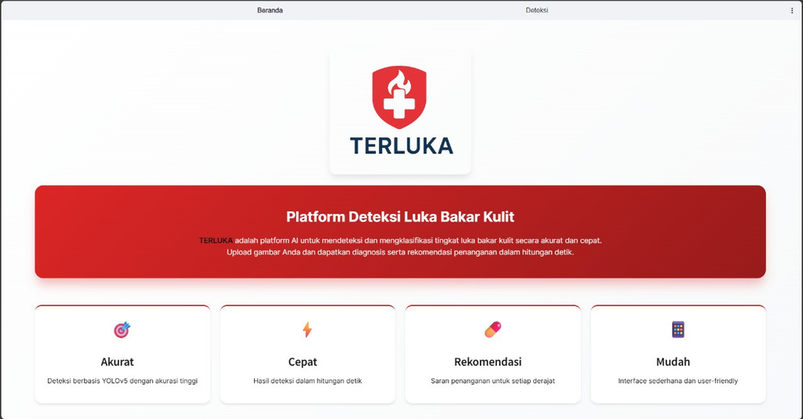
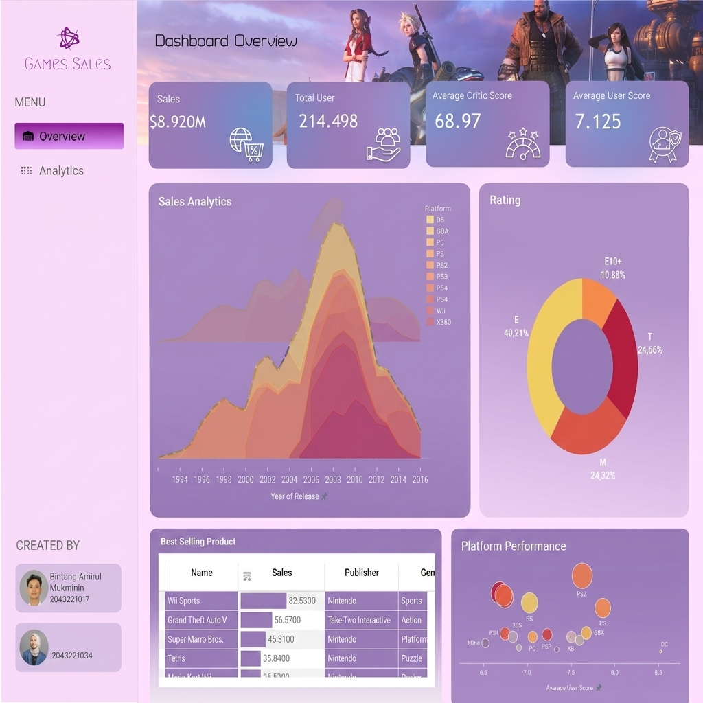
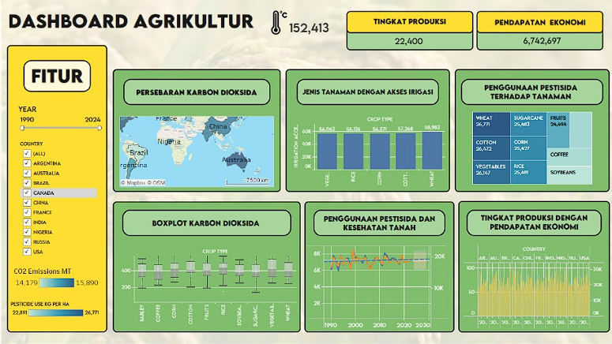
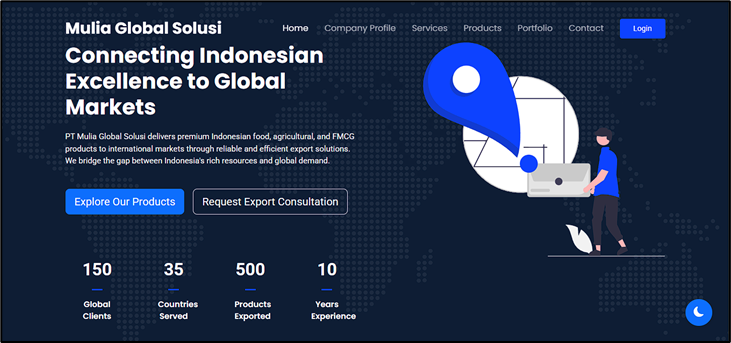
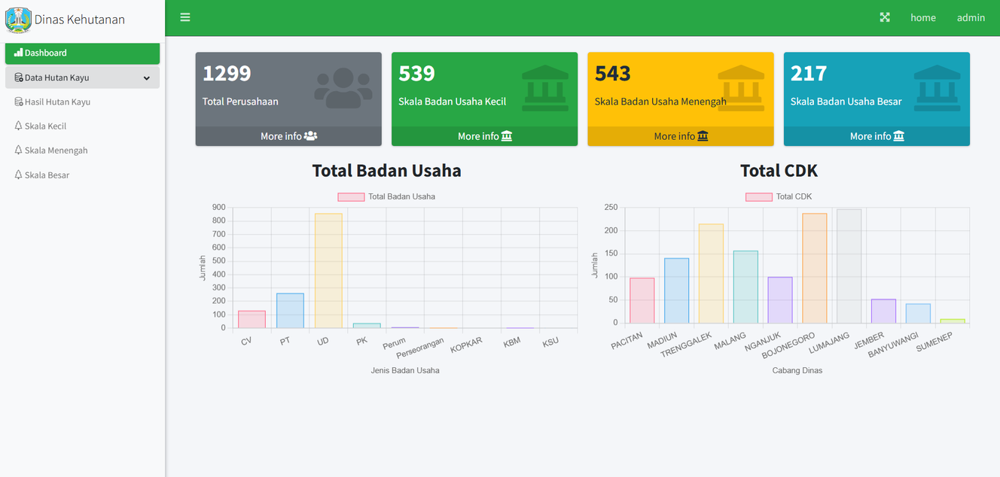
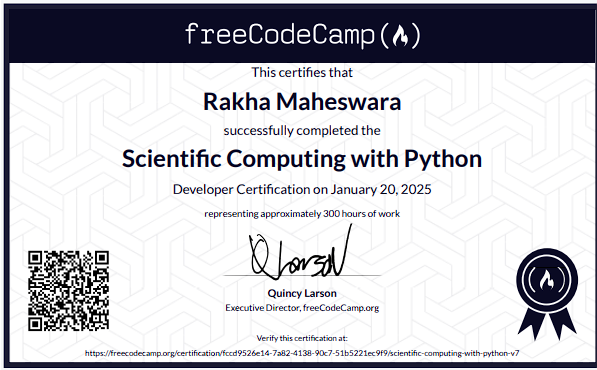
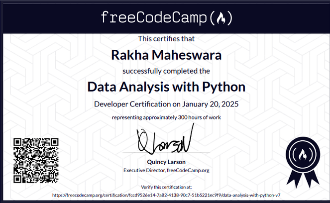
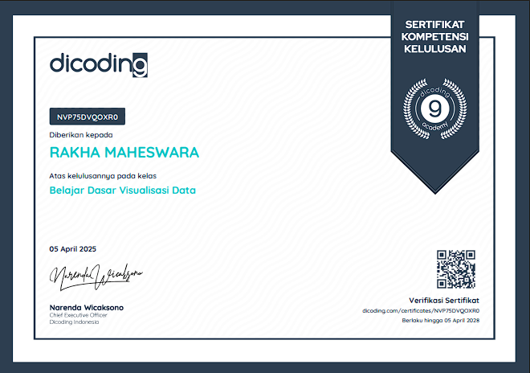
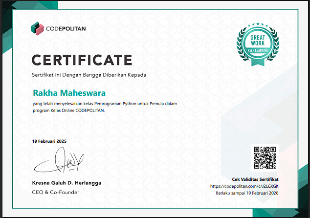

Transforming Complex Data into Actionable Insights
Business Statistics graduate from Sepuluh Nopember Institute of Technology (ITS) with hands-on experience in data analytics, forecasting, and business intelligence through academic research and industry projects.
Get To Know Me
Background
As a Business Statistics graduate from ITS, I focus on predictive modeling, forecasting, and business intelligence. I have extensive experience developing deep learning models and designing interactive dashboards that help stakeholders identify trends and make data-driven decisions faster.
Sepuluh Nopember Institute of Technology (ITS)
Bachelor of Applied Science in Statistics
August 2022 – Present
Current GPA: 3.30 / 4.00
Relevant Coursework: Business Forecasting Methods, Statistical Computing, Data Exploration & Visualization, Database Management, Machine Learning, Deep Learning, Risk Management.
Core Skills
Programming & Analytics
Machine Learning & AI
Business Intelligence & Viz
Tools & Frameworks
Professional Experience
Research Assistant (Project-Based)
Strategic Research Grant Type A, ITS- Designed and implemented multivariate deep learning models for time-series forecasting, encompassing data preparation, feature engineering, and model optimization.
- Evaluated and refined predictive models through systematic experimentation and hyperparameter tuning, achieving forecasting errors below 10% MAPE.
- Partnered with academic researchers to interpret findings, communicate technical results, and support the development of scientific publications.
IT Division Intern
PT Mulia Global Solusi- Developed digital solutions, including website modules and interactive dashboards, to enhance operational efficiency and business process automation.
- Created data visualizations and analytical reports using Google Looker Studio, enabling 2x faster identification of product trends for stakeholders.
- Applied forecasting techniques and model optimization to improve demand prediction accuracy, achieving forecasting errors below 10% MAPE and supporting inventory planning decisions.
Assistant Lecturer of Database Management
Sepuluh Nopember Institute of Technology- Delivered hands-on mentoring in PostgreSQL database design, query optimization, and data management to more than 30 students.
- Supervised over 10 database and business intelligence projects, providing technical guidance and ensuring the successful implementation of analytical solutions.
- Guided students in building end-to-end analytics workflows by integrating PostgreSQL with Google Looker Studio for data visualization, reporting, and business wawasan generation.
Freelance Surveyor
PT Mitra Pinasthika Mustika Tbk- Executed field and online market surveys to collect and validate consumer and market data for business and research purposes.
- Managed end-to-end survey processes, including respondent selection, questionnaire administration, data quality assurance, and dataset documentation.
- Transformed survey findings into analytical reports and actionable insights, supporting marketing initiatives, customer analysis, and strategic decision-making.
Student Internship
East Java Provincial Forestry Service (Dinas Kehutanan Jatim)- Processed and standardized the Forest Product Processing Business Permit (PBPHH) database, resolving data anomalies to ensure high data cleanliness for advanced analytics.
- Developed interactive data visualizations and executive dashboards of the PBPHH issuance history to streamline data-driven decision-making for provincial authorities.
- Executed time-series forecasting models to predict forest product production trends and resource utilization, delivering actionable insights for future supply planning.
Selected Projects

Stock Price Forecasting (LSTM)
Developed an LSTM-based deep learning model to predict the stock price of PT Vale Indonesia Tbk (INCO) with a 6.8% MAPE.
Project Details
TERLUKA - Burn Wound Detection
AI platform designed to automate burn wound identification and severity classification with 85% accuracy.
Project Details
Industrial Fire Detection System
Real-time YOLO-based fire detection system for industrial safety monitoring (82% detection accuracy).
Project Details
Socioeconomic Dashboard Salatiga
Interactive dashboard for socioeconomic data visualization in Salatiga City (poverty, unemployment, economic growth).
Project Details
Data Science Salary Analysis
Interactive dashboard analyzing global Data Science salary trends (2020–2022) based on experience level and company size.
Project Details
Game Sales Analysis Dashboard
Data visualization dashboard transforming video game sales data into regional trends and platform performance insights.
Project Details
Agricultural Sector Sustainability
Analysis of the global agricultural sector correlating production volume, carbon emissions, and pesticide use.
Project Details
PT Mulia Global Solusi Platform
Company website integrated with a product catalog management admin dashboard and operational modules.
Project Details
PBPHH Licensing Recap Dashboard
Admin system for recapitulating forest product permits integrated with East Java forestry licensing records.
Project DetailsCertifications






